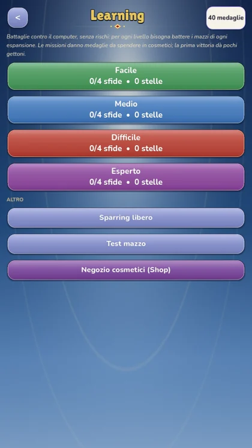
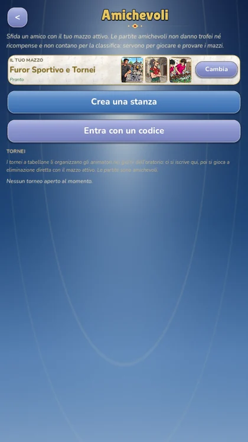
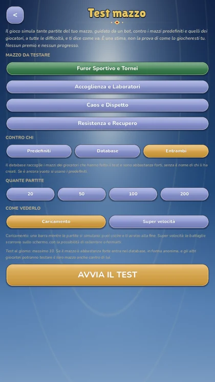

Campagna
Da soliUna battaglia al giorno«Un anno di oratorio, un giorno alla volta». La campagna segue il calendario: dodici capitoli, da ottobre a settembre, dal «Si riparte!» alla festa finale di «Estate Ragazzi», passando per Castagnata, Presepe vivente, Carnevale, Pasqua in oratorio e Olimpiadi del Grest.
- Ogni giorno c'è una battaglia: giochi quelle di oggi e dei giorni passati, quella di domani resta chiusa.
- Il boss del mese ti aspetta ogni tanto e l'ultimo giorno; gli altri giorni incontri i personaggi già conosciuti.
- Ogni mese ha una regola speciale che cambia il modo di giocare.
- Due missioni per battaglia, una sfida opzionale più difficile (con una stella in palio) e un obiettivo collettivo a cui contribuiscono tutti i giocatori.
- Completi tutte le missioni del mese? Ricevi una cornice da esporre nel profilo.

Ranked
Contro altri giocatoriStagioni mensiliLa scalata alla gerarchia dell'oratorio: si parte da Bambino e si sale passando per Ragazzo, Adolescente, Animatore, Educatore, Coordinatore e Responsabile, fino a Don.
- Vinci per guadagnare trofei: contro un avversario più forte se ne guadagnano di più.
- Una volta raggiunto un rank, nella stagione non scendi sotto la sua soglia.
- Ogni stagione dura un mese: a fine mese ricevi il premio del rank più alto raggiunto e la classifica si «ammorbidisce» per ripartire.
- Classifica generale, classifica del tuo rank e albo d'oro dei migliori di ogni stagione.
- Due compiti a settimana per rank, con un piccolo bonus.
- Se in quel momento non c'è nessuno da sfidare, il gioco ti abbina un avversario controllato dal computer.

Learning
Da soliPer imparareBattaglie contro il computer, senza rischi. Quattro livelli di difficoltà (Facile, Medio, Difficile, Esperto) e per ognuno una sfida contro ciascun mazzo predefinito.
- Le prime sfide del Facile mostrano suggerimenti a schermo su cosa fare in ogni fase.
- Fino a 3 stelle a sfida: vittoria, vittoria senza perdere Animatori, vittoria veloce.
- Missioni di sfida che regalano medaglie.
- A fine partita il Coach ti mostra i momenti chiave e fino a tre consigli (Materiali non posati, turni senza attacco...).
- C'è anche lo Sparring libero: prova il tuo mazzo contro quello che vuoi, senza premi.

Amichevoli e tornei
Con gli amiciNiente trofeiSi gioca per il gusto di giocare. Crei una stanza e dai il codice a un amico, oppure lo sfidi direttamente dalla lista amici: sul suo telefono compare «Nome ti sfida!».
- Tornei a tabellone a 4, 8 o 16 posti, organizzati dagli animatori nei giorni d'oratorio: ti iscrivi con il codice, e quando tocca a te premi «Sono pronto».
- In partita puoi mandare messaggi predefiniti all'avversario («Bella mossa!», «Buona fortuna!», «Rivincita?»), senza testo libero.
- Il vincitore riceve il premio scelto dall'organizzatore: gloria, gettoni o il titolo di «Campione del torneo».

Test mazzo
Per i costruttori di mazziQuanto vale il tuo mazzo? Il gioco simula tante partite automatiche contro i mazzi predefiniti, a tutte e quattro le difficoltà, e ti consegna un resoconto.
- Percentuale di vittorie e giudizio (valido, da migliorare, debole).
- Avversari migliori e peggiori, durata media delle partite.
- Le carte più giocate e quelle mai giocate: probabilmente da cambiare.
- Lo storico dei test per vedere se le modifiche hanno funzionato.